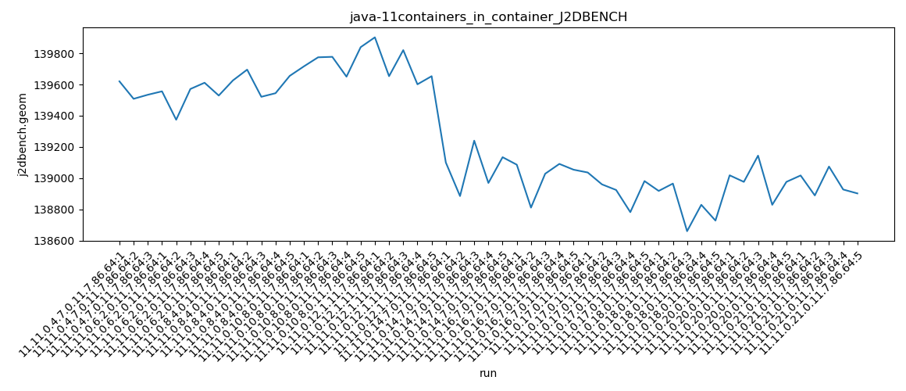
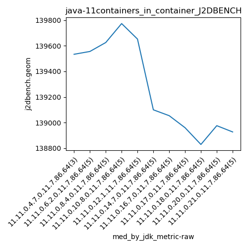

java-11 J2DBENCH
Context at bottom
/home/jvanek/git/benchmarks-in-nested-virtualisation-toolchain/final_results/containers_in_container_results/containers_in_container_DACAPO
java-11
J2DBENCH
/home/jvanek/git/benchmarks-in-nested-virtualisation-toolchain/final_results/containers_in_container_results/containers_in_container_SPECJBB
java-11
J2DBENCH
/home/jvanek/git/benchmarks-in-nested-virtualisation-toolchain/final_results/containers_in_container_results/containers_in_container_RADARGUNs3
java-11
J2DBENCH
/home/jvanek/git/benchmarks-in-nested-virtualisation-toolchain/final_results/containers_in_container_results/containers_in_container_J2DBENCH
java-11
J2DBENCH
containers_in_container_J2DBENCH
final score
Expected number of java-11 JDKs: 7
1st avgmed_alljdks_metric:
/home/jvanek/git/benchmarks-in-nested-virtualisation-toolchain/final_results/result_processing.py /home/jvanek/git/benchmarks-in-nested-virtualisation-toolchain/final_results/containers_in_container_results/containers_in_container_J2DBENCH j2dbench.geom False
values: [139620, 139508, 139534, 139556, 139374, 139571, 139611, 139529, 139626, 139695, 139521, 139544, 139655, 139716, 139774, 139777, 139650, 139839, 139902, 139653, 139820, 139601, 139653, 139100, 138885, 139240, 138969, 139134, 139086, 138811, 139028, 139091, 139054]

Expected number of iterations: 5
final number of values: 33 out of 35
Pass rate: 94.3%
values: (138811, 139902, 139458.39393939395, 139556)

** accuracy from all jdks and runs
more is better
MIN: 138811
MAX: 139902
AVG: 139458.39393939395
MED: 139556
Relative differences 1:
MIN-MAX: 1.0 %
MIN-AVG: 0.0 %
MIN-MED: 1.0 %
MAX-MIN: -1.0 %
MAX-AVG: -0.0 %
MAX-MED: -0.0 %
AVG-MED: 0.0 %
stored to java-11.properties. sort | uniq that!
2nd avgmed_by_jdk_metric:
values: [139554.0, 139528.2, 139608.2, 139751.2, 139725.8, 139065.6, 139014.0]

values: [139534, 139556, 139626, 139774, 139653, 139100, 139054]

values: (139014.0, 139751.2, 139463.85714285713, 139554.0)
values: (139054, 139774, 139471.0, 139556)

** accuracy from all jdks where runs were avged
more is better
MIN: 139014.0
MAX: 139751.2
AVG: 139463.85714285713
MED: 139554.0
Relative differences 1:
MIN-MAX: 1.0 %
MIN-AVG: 0.0 %
MIN-MED: 0.0 %
MAX-MIN: -1.0 %
MAX-AVG: -0.0 %
MAX-MED: -0.0 %
AVG-MED: 0.0 %
stored to java-11.properties. sort | uniq that!
** accuracy from all jdks where runs were medianed
more is better
MIN: 139054
MAX: 139774
AVG: 139471.0
MED: 139556
Relative differences 1:
MIN-MAX: 1.0 %
MIN-AVG: 0.0 %
MIN-MED: 0.0 %
MAX-MIN: -1.0 %
MAX-AVG: -0.0 %
MAX-MED: -0.0 %
AVG-MED: 0.0 %
stored to java-11.properties. sort | uniq that!
/home/jvanek/git/benchmarks-in-nested-virtualisation-toolchain/final_results/containers_in_container_results/containers_in_container_RADARGUNs1
java-11
J2DBENCH
/home/jvanek/git/benchmarks-in-nested-virtualisation-toolchain/final_results/containers_in_container_results/containers_in_container_JMH
java-11
J2DBENCH
pass rates:
containers_in_container_J2DBENCH=94.3%
Context:
- containers_in_container_results
- J2DBENCH